Dynatrace OpenPipeline - Kubernetes Events#
In this module we'll utilize Dynatrace OpenPipeline to process Kubernetes Events at ingest, in order to make them easier to analyze and leverage. The events will be ingested by OpenTelemetry Collector as logs, deployed on Kubernetes as part of the previous module. With OpenPipeline, the logs will be processed at ingest, to manipulate fields, extract metrics, and raise alert events in case of any issues.
The OpenTelemetry Collector, specifically the Contrib Distro running as a Deployment, is configured to capture Kubernetes Events using the k8s_objects receiver. These events are shipped to Dynatrace as OpenTelemetry logs. While these logs contain a lot of useful information, they are missing valuable fields/attributes that will make them easier to analyze in context. These logs can be enriched at ingest, using OpenPipeline. Additionally, OpenPipeline allows us to process fields, extract new data types, manage permissions, and modify storage retention.
Goals:
- Enrich logs with additional Kubernetes metadata
- Enrich the log message, via the content field
- Set loglevel and status fields
- Remove unwanted fields/attributes
- Add OpenTelemetry service name and namespace
- Extract metrics: event count
- Storage retention with bucket assignment

OpenPipeline is an architectural component of Dynatrace SaaS. It resides between the Dynatrace SaaS tenant and Grail data lakehouse. Logs (,traces, metrics, events, and more) are sent to the Dynatrace SaaS tenant and route through OpenPipeline where they are enriched, transformed, and contextualized prior to being stored in Grail.
Generate Kubernetes Events#
Kubernetes Events will only be generated when Kubernetes orchestration causes changes within the environment. Generate new Kubernetes Events for analysis prior to continuing.
Command:
kubectl delete pods -n astronomy-shop --field-selector="status.phase=Running"
This will delete all running pods for astronomy-shop and schedule new ones, resulting in many new Kubernetes Events.
Query Logs#
Query and discover the Kubernetes Events logs as they are ingested and stored in Dynatrace. Use Dynatrace Query Language (DQL) to transform the logs at query time and prepare for Dynatrace OpenPipeline configuration.
Import Notebook into Dynatrace
Download Kubernetes Events Logs Notebook
Kubernetes Events - Ondemand Processing at Query Time (Notebook)
Kubernetes Attributes#
When the OpenTelemetry Collector captures Kubernetes Events using the k8s_objects receiver, most of the Kubernetes context information is stored in fields with the prefix object.* and object.involvedObject.*. These fields aren't used in other logs related to Kubernetes observability. Dynatrace OpenPipeline enables us to parse these object fields and use them to populate the normal Kubernetes (k8s.*) attributes.
Field Name Casing
In some cases, it has been observed that the fields that should start with object.involvedObject.* are instead starting with object.involvedobject.*. When using field names with DQL, the proper case needs to be used. If you encounter this, please match the casing you observe in your environment.
Query the Kubernetes logs filtered on event.domain == "k8s" and telemetry.sdk.name.
DQL: Before OpenPipeline and DQL Transformation
fetch logs
| filter matchesValue(telemetry.sdk.name,"opentelemetry") and matchesValue(event.domain,"k8s") and matchesValue(k8s.resource.name,"events")
| filter isNotNull(object.involvedObject.namespace) and isNotNull(object.involvedObject.kind) and isNotNull(object.involvedObject.name)
| sort timestamp desc
| limit 25
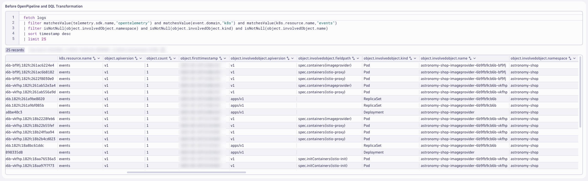
Notice the many fields with the object.* prefix that provide valuable context information about the Kubernetes component related to the event. Use the object.involvedObject.namespace, object.involvedObject.kind, and object.involvedObject.name fields to set the Kubernetes (k8s.*) attributes.
Use DQL to transform the logs and apply the k8s.* attributes.
DQL: After DQL Transformation
fetch logs
| filter matchesValue(telemetry.sdk.name,"opentelemetry") and matchesValue(event.domain,"k8s") and matchesValue(k8s.resource.name,"events")
| filter isNotNull(object.involvedObject.namespace) and isNotNull(object.involvedObject.kind) and isNotNull(object.involvedObject.name)
| sort timestamp desc
| limit 25
| fieldsAdd k8s.namespace.name = object.involvedObject.namespace
| fieldsAdd k8s.pod.name = if(object.involvedObject.kind == "Pod",object.involvedObject.name)
| fieldsAdd k8s.deployment.name = if(object.involvedObject.kind == "Deployment",object.involvedObject.name)
| fieldsAdd k8s.replicaset.name = if(object.involvedObject.kind == "ReplicaSet",object.involvedObject.name)
| fields timestamp, k8s.namespace.name, k8s.deployment.name, k8s.replicaset.name, k8s.pod.name, object.involvedObject.kind, object.involvedObject.name
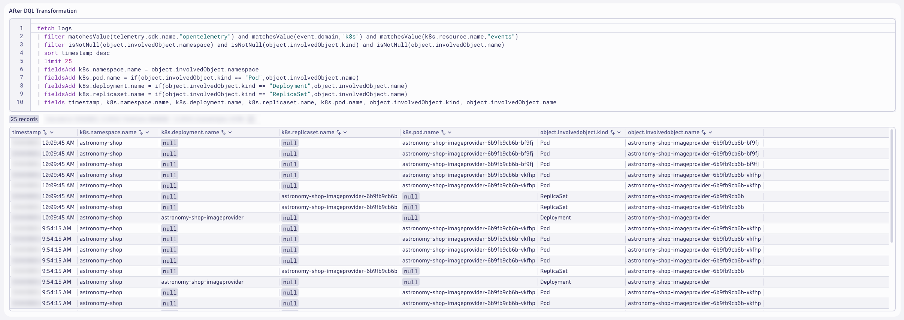
These changes with DQL allow us to populate the relevant Kubernetes attributes where we know the correct value. For example, if the involved object is a Deployment, then we can set the k8s.deployment.name attribute. In order to populate the missing fields, we can apply logic and DQL parsing commands.
Kubernetes ReplicaSet#
For the Kubernetes Events that impact a ReplicaSet, we need to set the k8s.replicaset.name and k8s.deployment.name. Since the event doesn't directly impact a Pod and we don't know the Pod unique id, the k8s.pod.name attribute should remain null.
Query the Kubernetes logs filtered on object.involvedObject.kind == "ReplicaSet".
DQL: Before OpenPipeline and DQL Transformation
fetch logs
| filter matchesValue(telemetry.sdk.name,"opentelemetry") and matchesValue(event.domain,"k8s") and matchesValue(k8s.resource.name,"events")
| filter isNotNull(object.involvedObject.namespace) and isNotNull(object.involvedObject.name) and matchesValue(object.involvedObject.kind,"ReplicaSet")
| sort timestamp desc
| limit 25
| fields timestamp, k8s.namespace.name, k8s.deployment.name, k8s.replicaset.name, k8s.pod.name, object.involvedObject.kind, object.involvedObject.name

The ReplicaSet name follows the naming convention <deployment-name>-<replicaset-hash>. Use DQL to transform the logs, parse the ReplicaSet name, and apply the value ot the k8s.deployment.name attribute.
DQL: After DQL Transformation
fetch logs
| filter matchesValue(telemetry.sdk.name,"opentelemetry") and matchesValue(event.domain,"k8s") and matchesValue(k8s.resource.name,"events")
| filter isNotNull(object.involvedObject.namespace) and isNotNull(object.involvedObject.name) and matchesValue(object.involvedObject.kind,"ReplicaSet")
| sort timestamp desc
| limit 25
| parse object.involvedObject.name, "LD:deployment ('-' ALNUM:hash EOS)"
| fieldsAdd k8s.deployment.name = deployment
| fields timestamp, k8s.namespace.name, k8s.deployment.name, k8s.replicaset.name, k8s.pod.name, object.involvedObject.kind, object.involvedObject.name

This modifies the log attributes at query time and helps us identify the processing rules for Dynatrace OpenPipeline. We'll validate the results after OpenPipeline, later.
Kubernetes Pod#
For the Kubernetes Events that impact a Pod, we need to set the k8s.pod.name, k8s.replicaset.name and k8s.deployment.name since we know all (3).
Query the Kubernetes logs filtered on object.involvedObject.kind == "Pod".
DQL: Before OpenPipeline and DQL Transformation
fetch logs
| filter matchesValue(telemetry.sdk.name,"opentelemetry") and matchesValue(event.domain,"k8s") and matchesValue(k8s.resource.name,"events")
| filter isNotNull(object.involvedObject.namespace) and isNotNull(object.involvedObject.name) and matchesValue(object.involvedObject.kind,"Pod")
| sort timestamp desc
| limit 25
| fields timestamp, k8s.namespace.name, k8s.deployment.name, k8s.replicaset.name, k8s.pod.name, object.involvedObject.kind, object.involvedObject.name

The Pod name follows the naming convention <deployment-name>-<replicaset-hash>-<pod-hash>. Use DQL to transform the logs, parse the Pod name, and apply the value ot the k8s.deployment.name and k8s.replicaset.name attributes.
DQL: After DQL Transformation
fetch logs
| filter matchesValue(telemetry.sdk.name,"opentelemetry") and matchesValue(event.domain,"k8s") and matchesValue(k8s.resource.name,"events")
| filter isNotNull(object.involvedObject.namespace) and isNotNull(object.involvedObject.name) and matchesValue(object.involvedObject.kind,"Pod")
| sort timestamp desc
| limit 25
| parse object.involvedObject.name, "LD:deployment ('-' ALNUM:hash '-' ALNUM:unique EOS)"
| fieldsAdd k8s.deployment.name = deployment
| fieldsAdd k8s.replicaset.name = concat(deployment,"-",hash)
| fields timestamp, k8s.namespace.name, k8s.deployment.name, k8s.replicaset.name, k8s.pod.name, object.involvedObject.kind, object.involvedObject.name

This modifies the log attributes at query time and helps us identify the processing rules for Dynatrace OpenPipeline. We'll validate the results after OpenPipeline, later.
Content Field and Drop Fields#
The content field is a standard semantic attribute/field for log data. Best practice is to have a populated content field, as the minimum fields necessary for log analysis are timestamp and content. For the Kubernetes Events, the content field is null. There are other fields on the logs that can be used to populate the content field, object.reason and object.message are the best candidates.
Additionally, there are several fields with the object.metadata.* prefix which provide little to no value. These fields add log bloat, consuming unnecessary storage and increasing query response times (albeit negligbly).
Query the Kubernetes logs focused on these attributes.
DQL: Before OpenPipeline and DQL Transformation
fetch logs
| filter matchesValue(telemetry.sdk.name,"opentelemetry") and matchesValue(event.domain,"k8s") and matchesValue(k8s.resource.name,"events")
| filter isNotNull(object.involvedObject.namespace) and isNotNull(object.involvedObject.kind) and isNotNull(object.involvedObject.name)
| sort timestamp desc
| limit 25
| fields timestamp, content, object.reason, object.message, object.metadata.managedfields, object.metadata.name, object.metadata.uid
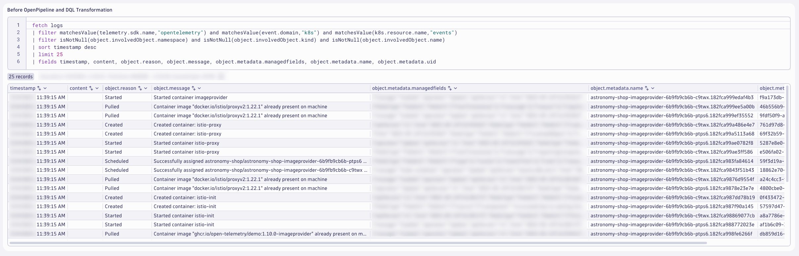
We can use the object.reason and object.message fields together to create a valuable content field. The object.metadata.managedfields, object.metadata.name, and object.metadata.uid fields are redudant or useless, they can be removed.
Use DQL to transform the logs, set the content field and remove the useless fields.
DQL: After DQL Transformation
fetch logs
| filter matchesValue(telemetry.sdk.name,"opentelemetry") and matchesValue(event.domain,"k8s") and matchesValue(k8s.resource.name,"events")
| filter isNotNull(object.involvedObject.namespace) and isNotNull(object.involvedObject.kind) and isNotNull(object.involvedObject.name)
| filter matchesValue(content,"") or matchesValue(content," ") or isNull(content)
| sort timestamp desc
| limit 25
| fieldsAdd content = if(isNull(object.reason), object.message, else:concat(object.reason,": ", object.message))
| fieldsAdd object.metadata.uid = null, object.metadata.name = null, object.metadata.managedfields = null
| fields timestamp, content, object.reason, object.message, object.metadata.managedfields, object.metadata.name, object.metadata.uid
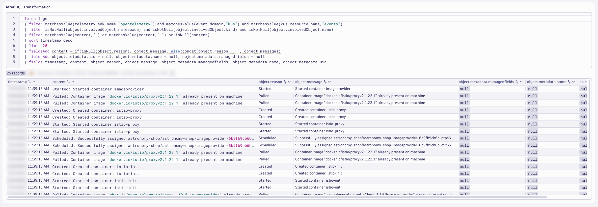
This modifies the log attributes at query time and helps us identify the processing rules for Dynatrace OpenPipeline. We'll validate the results after OpenPipeline, later.
OpenTelemetry Service Name and Namespace#
In OpenTelemetry, service.name and service.namespace are used to provide meaningful context about the services generating telemetry data:
service.name: This is the logical name of the service. It should be the same for all instances of a horizontally scaled service. For example, if you have a shopping cart service, you might name it shoppingcart.
service.namespace: This is used to group related services together. It helps distinguish a group of services that logically belong to the same system or team. For example, you might use Shop as the namespace for all services related to an online store.
These attributes help in organizing and identifying telemetry data, making it easier to monitor and troubleshoot services within a complex system.
The logs for the Kubernetes Events do not include these fields. In order to make it easier to analyze the log files and unify the telemetry, the service.name and service.namespace attributes should be added with Dynatrace OpenPipeline.
Query the Kubernetes logs for astronomy-shop.
DQL: Before OpenPipeline and DQL Transformation
fetch logs
| filter matchesValue(telemetry.sdk.name,"opentelemetry") and matchesValue(event.domain,"k8s") and matchesValue(k8s.resource.name,"events")
| filter isNotNull(object.involvedObject.namespace) and isNotNull(object.involvedObject.kind) and isNotNull(object.involvedObject.name)
| filter matchesValue(k8s.namespace.name,"astronomy-shop")
| sort timestamp desc
| limit 25
| fields timestamp, k8s.namespace.name, k8s.deployment.name, service.name, service.namespace, object.involvedObject.name

The k8s.deployment.name can be split to obtain the service.name field. Unfortunately, the service.namespace value does not exist anywhere on the event. This value will need to be set as a static string. Use the value that you set in the $NAME variable earlier, in the form <INITIALS>-k8s-otel-o11y.
Use DQL to transform the logs, set the service.name and service.namespace fields.
DQL: After DQL Transformation
fetch logs
| filter matchesValue(telemetry.sdk.name,"opentelemetry") and matchesValue(event.domain,"k8s") and matchesValue(k8s.resource.name,"events")
| filter isNotNull(object.involvedObject.namespace) and isNotNull(object.involvedObject.kind) and isNotNull(object.involvedObject.name)
| filter matchesValue(k8s.namespace.name,"astronomy-shop") and matchesValue(object.involvedObject.kind,"Deployment")
| sort timestamp desc
| limit 25
| fieldsAdd k8s.deployment.name = object.involvedObject.name
| fieldsAdd split_deployment_name = splitString(k8s.deployment.name,k8s.namespace.name)
| parse split_deployment_name[1], "(PUNCT?) WORD:service.name"
| fieldsRemove split_deployment_name
| fieldsAdd service.namespace = "<INITIALS>-k8s-otel-o11y"
| fields timestamp, k8s.namespace.name, k8s.deployment.name, service.name, service.namespace
<INITIALS> with the correct value in your query!

This modifies the log attributes at query time and helps us identify the processing rules for Dynatrace OpenPipeline. We'll validate the results after OpenPipeline, next.
Configure OpenPipeline#
Configure Dynatrace OpenPipeline for Kubernetes Events logs.
View Images
If the images are too small and the text is difficult to read, right-click and open the image in a new tab.
Save Often
Consider saving your pipeline configuration often to avoid losing any changes.
In your Dynatrace tenant, launch the OpenPipeline app. Begin by selecting Logs from the left-hand menu of telemetry types. Then choose Pipelines. Click on + Pipeline to add a new pipeline.
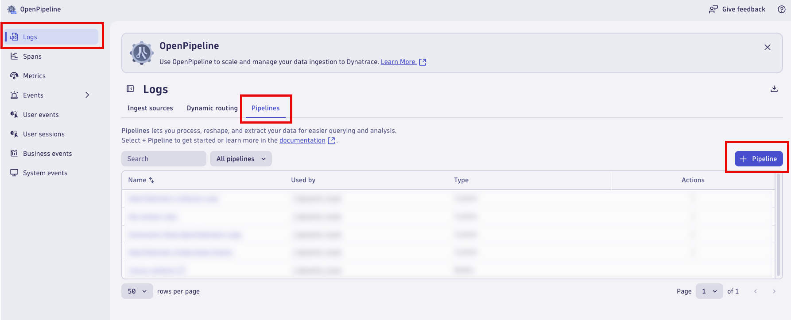
Name the new pipeline, OpenTelemetry Kubernetes Events. Click on the Processing tab to begin adding Processor rules.
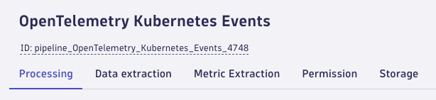
Kubernetes Attributes#
Add a processor to set the Kubernetes Attributes. Click on + Processor to add a new processor.
Type:
DQL
Name:
Kubernetes Attributes
Matching condition:
isNotNull(object.involvedObject.namespace) and isNotNull(object.involvedObject.kind) and isNotNull(object.involvedObject.name)
Processor definition:
fieldsAdd k8s.namespace.name = object.involvedObject.namespace
| fieldsAdd k8s.pod.name = if(object.involvedObject.kind == "Pod",object.involvedObject.name)
| fieldsAdd k8s.deployment.name = if(object.involvedObject.kind == "Deployment",object.involvedObject.name)
| fieldsAdd k8s.replicaset.name = if(object.involvedObject.kind == "ReplicaSet",object.involvedObject.name)
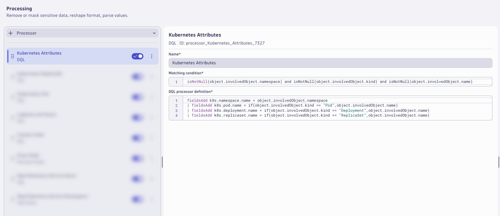
Kubernetes ReplicaSet#
Add a processor to set the values for Kubernetes ReplicaSet. Click on + Processor to add a new processor.
Type:
DQL
Name:
Kubernetes ReplicaSet
Matching condition:
isNotNull(object.involvedObject.namespace) and isNotNull(object.involvedObject.name) and matchesValue(object.involvedObject.kind,"ReplicaSet")
Processor definition:
parse object.involvedObject.name, "LD:deployment ('-' ALNUM:hash EOS)"
| fieldsAdd k8s.deployment.name = deployment
| fieldsRemove deployment, hash
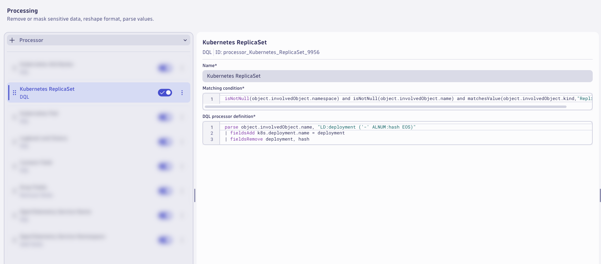
Kubernetes Pod#
Add a processor to set the values for Kubernetes Pod. Click on + Processor to add a new processor.
Type:
DQL
Name:
Kubernetes Pod
Matching condition:
isNotNull(object.involvedObject.namespace) and isNotNull(object.involvedObject.name) and matchesValue(object.involvedObject.kind,"Pod")
Processor definition:
parse object.involvedObject.name, "LD:deployment ('-' ALNUM:hash '-' ALNUM:unique EOS)"
| fieldsAdd k8s.deployment.name = deployment
| fieldsAdd k8s.replicaset.name = concat(deployment,"-",hash)
| fieldsRemove deployment, hash, unique
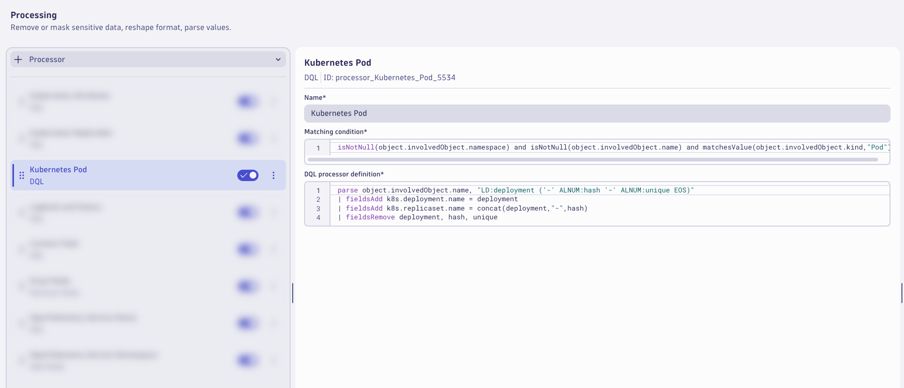
Loglevel and Status#
Add a processor to set the Loglevel and Status fields. Click on + Processor to add a new processor.
Type:
DQL
Name:
Loglevel and Status
Matching condition:
isNotNull(object.type) and (isNull(loglevel) or matchesValue(loglevel,"NONE")) and (isNull(status) or matchesValue(status,"NONE"))
Processor definition:
fieldsAdd loglevel = if(matchesValue(object.type,"Normal"),"INFO", else: if(matchesValue(object.type,"Warning"),"WARN", else: "NONE"))
| fieldsAdd status = if(matchesValue(object.type,"Normal"),"INFO", else: if(matchesValue(object.type,"Warning"),"WARN", else: "NONE"))
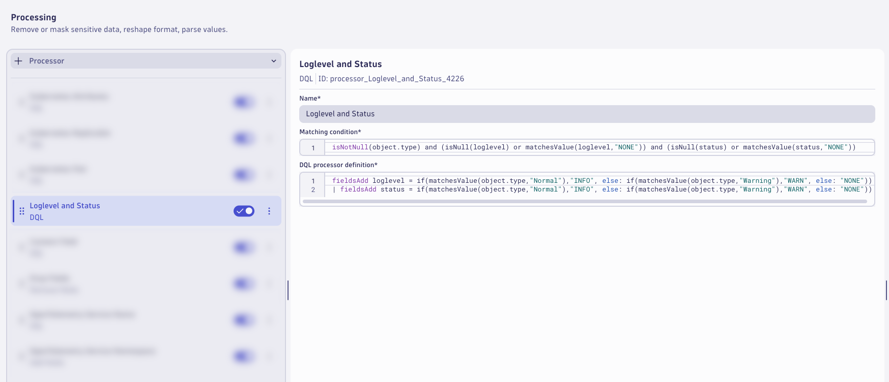
Content Field#
Add a processor to set the content field. Click on + Processor to add a new processor.
Type:
DQL
Name:
Content Field
Matching condition:
(matchesValue(content,"") or matchesValue(content," ") or isNull(content)) and isNotNull(object.message)
Processor definition:
fieldsAdd content = if(isNull(object.reason), object.message, else:concat(object.reason,": ", object.message))
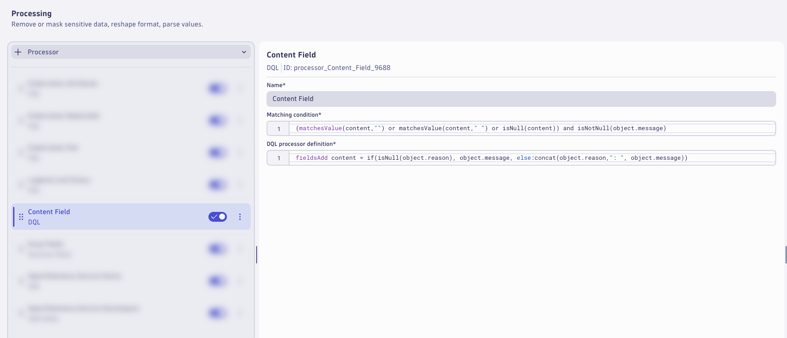
Remove Fields#
Add a processor to drop the redudant and unnecessary. Click on + Processor to add a new processor.
Type:
Remove Fields
Name:
Drop Fields
Matching condition:
isNotNull(object.involvedObject.namespace) and isNotNull(object.involvedObject.kind) and isNotNull(object.involvedObject.name)
Remove fields:
| Fields |
|---|
| object.metadata.name |
| object.metadata.uid |
| object.metadata.managedFields |

OpenTelemetry Service Name#
Add a processor to set the OpenTelemetry Service Name. Click on + Processor to add a new processor.
Type:
DQL
Name:
OpenTelemetry Service Name
Matching condition:
matchesValue(k8s.namespace.name,"astronomy-shop") and isNotNull(k8s.deployment.name) and isNull(service.name)
Processor definition:
fieldsAdd split_deployment_name = splitString(k8s.deployment.name,k8s.namespace.name)
| parse split_deployment_name[1], "(PUNCT?) WORD:service.name"
| fieldsRemove split_deployment_name

OpenTelemetry Service Namespace#
Add a processor to set the OpenTelemetry Service Namespace. Click on + Processor to add a new processor.
Type:
Add Fields
Name:
OpenTelemetry Service Namespace
Matching condition:
matchesValue(k8s.namespace.name,"astronomy-shop") and isNotNull(k8s.deployment.name) and isNotNull(service.name) and isNull(service.namespace)
Add fields:
| Field | Value |
|---|---|
| service.namespace | INITIALS-k8s-otel-o11y |
Be sure to use the same service.namespace value that you have used elsewhere in this lab!

Save Often
Consider saving your pipeline configuration often to avoid losing any changes.
Kubernetes Event Count#
Switch to the Metric Extraction tab.
Add a processor to set extract a metric from the Kubernetes event logs. Click on + Processor to add a new processor.
Type:
Counter metric
Name:
Kubernetes Event Count
Matching condition:
isNotNull(k8s.cluster.name) and isNotNull(k8s.namespace.name) and isNotNull(status)
Metric key:
otel.k8s.event_count
Dimensions:
| Fields |
|---|
| k8s.namespace.name |
| k8s.cluster.name |
| status |
| service.name |
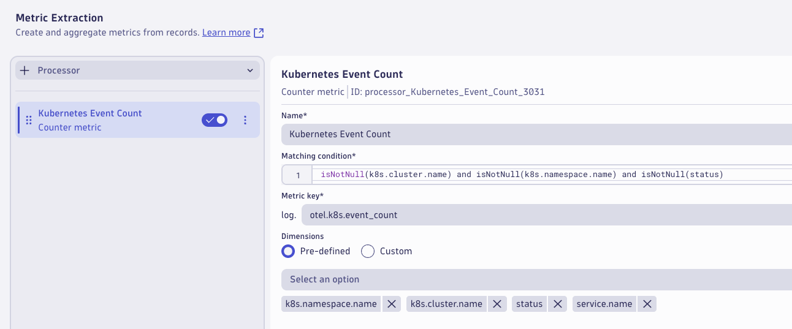
Consider Saving
Consider saving your pipeline configuration often to avoid losing any changes.
Storage#
Switch to the Storage tab.
Add a processor to set the bucket assignment. Click on + Processor to add a new Bucket Assignment processor.
Name:
Observe and Troubleshoot Apps Bucket
Matching condition:
matchesValue(k8s.namespace.name,"astronomy-shop") and matchesValue(status,"WARN")
Storage:
Observe and Troubleshoot Apps (95 Days)
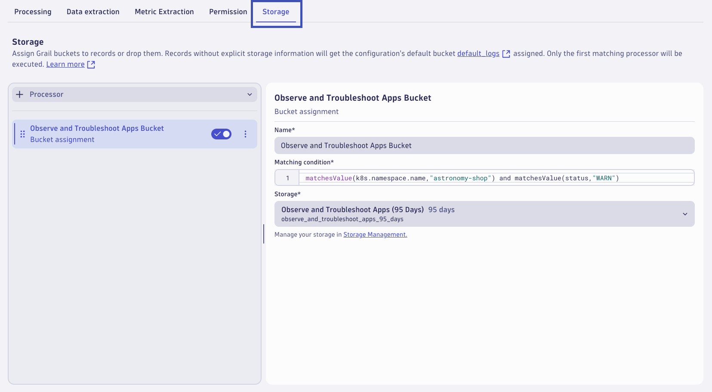
This will result in Kubernetes Events logs with WARN status values that involve the astronomy-shop namespace matching this pipeline to be stored for 95 days in this bucket.
Add a processor to set the bucket assignment. Click on + Processor to add a new Bucket Assignment processor.
Name:
Infrastructure Observability and AIOps Bucket
Matching condition:
isNotNull(status) and isNotNull(k8s.namespace.name)
Storage:
Infrastructure Observability and AIOps (365 Days)
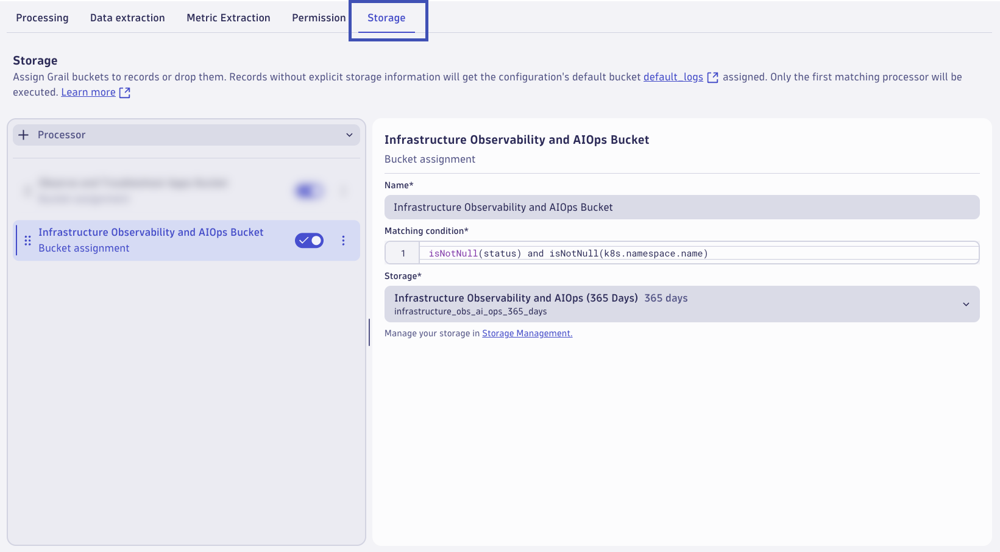
This will result in any Kubernetes Events logs with a status field and k8s.namespace.name field matching this pipeline to be stored for 365 days in this bucket, if they did not match the previous processor. Logs, or any other record type, processed through OpenPipeline can only be stored in one bucket. The first matching processor is used to set the storage location.
The pipeline is now configured, click on Save to save the pipeline configuration.
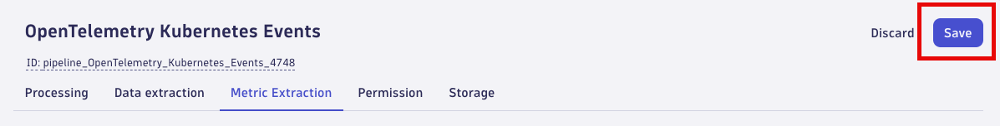
Dynamic Route#
A pipeline will not have any effect unless logs are configured to be routed to the pipeline. With dynamic routing, data is routed based on a matching condition. The matching condition is a DQL query that defines the data set you want to route.
Click on Dynamic Routing to configure a route to the target pipeline. Click on + Dynamic Route to add a new route.

Configure the Dynamic Route to use the OpenTelemetry Kubernetes Events pipeline.
Name:
OpenTelemetry Kubernetes Events
Matching condition:
matchesValue(telemetry.sdk.name,"opentelemetry") and matchesValue(event.domain,"k8s") and matchesValue(k8s.resource.name,"events")
Pipeline:
OpenTelemetry Kubernetes Events
Click Add to add the route.
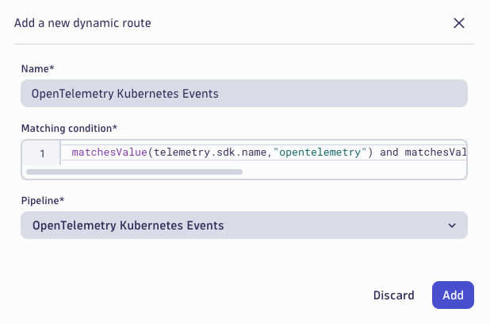
Validate that the route is enabled in the Status column. Click on Save to save the dynamic route table configuration.

Changes will typically take effect within a couple of minutes.
Analyze Results#
Analyze the Kubernetes Events logs after Dynatrace OpenPipeline processing.
Generate Kubernetes Events#
Kubernetes Events will only be generated when Kubernetes orchestration causes changes within the environment. Generate new Kubernetes Events for analysis prior to continuing.
Command:
kubectl delete pods -n astronomy-shop --field-selector="status.phase=Running"
This will delete all running pods for astronomy-shop and schedule new ones, resulting in many new Kubernetes Events.
Analyze the results in Dynatrace (Notebook)#
Use the Notebook from earlier to analyze the results.
Kubernetes Attributes
Query the Kubernetes Events logs fitered on event.domain == "k8s" to analyze with Kubernetes Attributes.
DQL: After OpenPipeline
fetch logs
| filter matchesValue(telemetry.sdk.name,"opentelemetry") and matchesValue(event.domain,"k8s") and matchesValue(k8s.resource.name,"events")
| filter isNotNull(object.involvedObject.namespace) and isNotNull(object.involvedObject.kind) and isNotNull(object.involvedObject.name)
| sort timestamp desc
| limit 25
| fields timestamp, k8s.namespace.name, k8s.deployment.name, k8s.replicaset.name, k8s.pod.name, object.involvedObject.kind, object.involvedObject.name

Kubernetes ReplicaSet
Query the Kubernetes Events logs fitered on object.involvedObject.kind == "ReplicaSet".
DQL: After OpenPipeline
fetch logs
| filter matchesValue(telemetry.sdk.name,"opentelemetry") and matchesValue(event.domain,"k8s") and matchesValue(k8s.resource.name,"events")
| filter isNotNull(object.involvedObject.namespace) and isNotNull(object.involvedObject.name) and matchesValue(object.involvedObject.kind,"ReplicaSet")
| sort timestamp desc
| limit 25
| fields timestamp, k8s.namespace.name, k8s.deployment.name, k8s.replicaset.name, k8s.pod.name, object.involvedObject.kind, object.involvedObject.name

Kubernetes Pod
Query the Kubernetes Events logs fitered on object.involvedObject.kind == "Pod".
DQL: After OpenPipeline
fetch logs
| filter matchesValue(telemetry.sdk.name,"opentelemetry") and matchesValue(event.domain,"k8s") and matchesValue(k8s.resource.name,"events")
| filter isNotNull(object.involvedObject.namespace) and isNotNull(object.involvedObject.name) and matchesValue(object.involvedObject.kind,"Pod")
| sort timestamp desc
| limit 25
| fields timestamp, k8s.namespace.name, k8s.deployment.name, k8s.replicaset.name, k8s.pod.name, object.involvedObject.kind, object.involvedObject.name
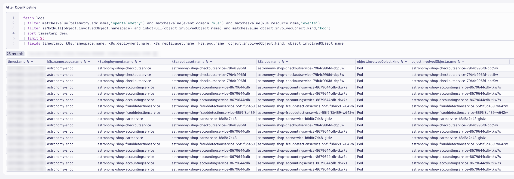
Content Field and Drop Fields
Query the Kubernetes Events logs to view the new content field.
DQL: After OpenPipeline
fetch logs
| filter matchesValue(telemetry.sdk.name,"opentelemetry") and matchesValue(event.domain,"k8s") and matchesValue(k8s.resource.name,"events")
| filter isNotNull(object.involvedObject.namespace) and isNotNull(object.involvedObject.kind) and isNotNull(object.involvedObject.name)
| sort timestamp desc
| limit 25
| fields timestamp, content, object.reason, object.message, object.metadata.managedfields, object.metadata.name, object.metadata.uid
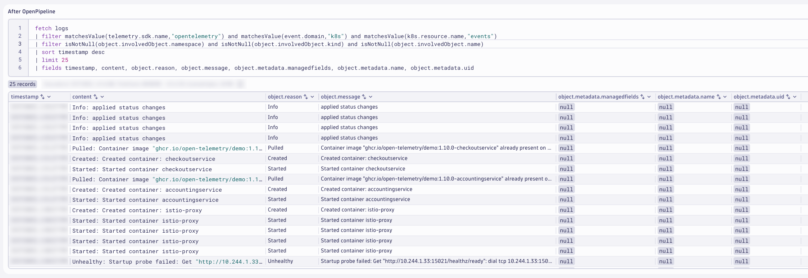
OpenTelemetry Service Name and Namespace
Query the Kubernetes Events logs filtered on service.name and service.namespace.
DQL: After OpenPipeline
fetch logs
| filter matchesValue(telemetry.sdk.name,"opentelemetry") and matchesValue(event.domain,"k8s") and matchesValue(k8s.resource.name,"events")
| filter isNotNull(object.involvedObject.namespace) and isNotNull(object.involvedObject.kind) and isNotNull(object.involvedObject.name)
| filter matchesValue(k8s.namespace.name,"astronomy-shop") and isNotNull(k8s.deployment.name) and isNotNull(service.name)
| sort timestamp desc
| limit 25
| fields timestamp, k8s.namespace.name, k8s.deployment.name, service.name, service.namespace, content

Wrap Up#
What You Learned Today
By completing this module, you've successfully set up Dynatrace OpenPipeline pipelines to process the Kubernetes Events logs at ingest.
- Kubernetes Events logs
- Enrich logs with additional Kubernetes metadata to unify telemetry signals and analyze Kubernetes context
- Enrich the content field to fit logging standards and semantics
- Set loglevel and status fields to easily identify errors with Kubernetes context
- Remove unwanted fields/attributes to reduce log bloat and optimize queries
- Add OpenTelemetry service name and namespace to unify telemetry signals and enable out-of-the-box analysis
- Extract metrics: event count to track Kubernetes health and reduce heavy log queries
- Routed logs to a specific bucket in Grail based on retention period needs